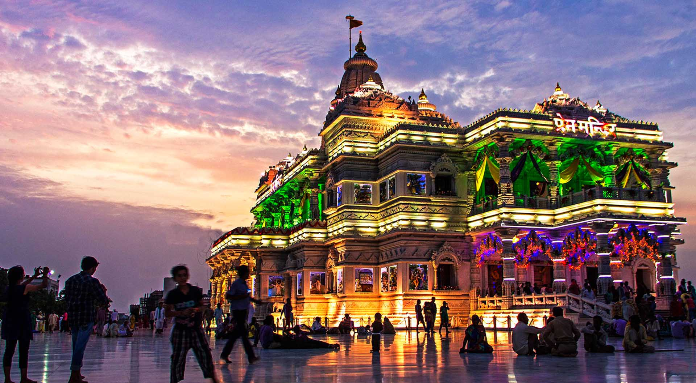
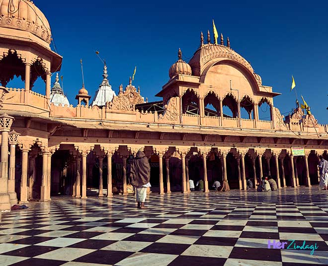

Tour in Vrindavan
|  | Vrindavan, a small town nestled in the Indian state of Uttar Pradesh, holds immense spiritual and cultural significance. Renowned for its association with Lord Krishna, a revered deity in Hinduism, Vrindavan is considered a sacred pilgrimage site and a hub of devotion.Vrindavan's spiritual aura is further enriched by its proximity to Mathura, the birthplace of Lord Krishna, and Barsana, the village associated with Radha, his beloved. These three interconnected places form a sacred triad that encapsulates the essence of devotion, love, and devotion in Hindu mythology. |
Tour in Mathura

|
Nestled in India's Uttar Pradesh, Mathura is steeped in spiritual and historical eminence. As the birthplace of Lord Krishna, it's a revered pilgrimage site with iconic temples like Shri Krishna Janmabhoomi. The city's vibrant markets, the serene Vishram Ghat on Yamuna River, and the exuberant Janmashtami festival showcase its cultural richness. Beyond its religious significance, Mathura boasts ancient architectural marvels, including the Dwarkadhish Temple, and houses a trove of historical artifacts in the Mathura Museum. This amalgamation of spirituality, history, and culture makes Mathura a captivating destination that echoes with the essence of India's heritage. |
Tour in Barsana
|  | Barsana, a quaint town near Mathura, India, holds deep-rooted cultural and religious significance. Revered as the birthplace of Radha, Lord Krishna's beloved, it's a haven for devotion and traditions. The town's ancient temples, like Radha Rani Temple, showcase intricate architecture and hold poignant stories. Barsana's unique Holi celebrations, known as "Lathmar Holi," where women playfully hit men with sticks, draw crowds worldwide. The town's rural charm, festivals, and connection to Radha-Krishna's love story make Barsana a cherished destination for those seeking a blend of spirituality and cultural heritage in India's heartland. |